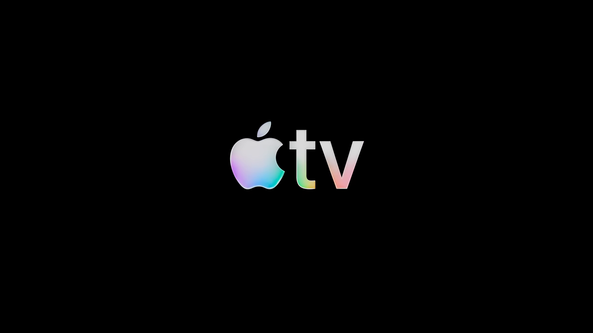
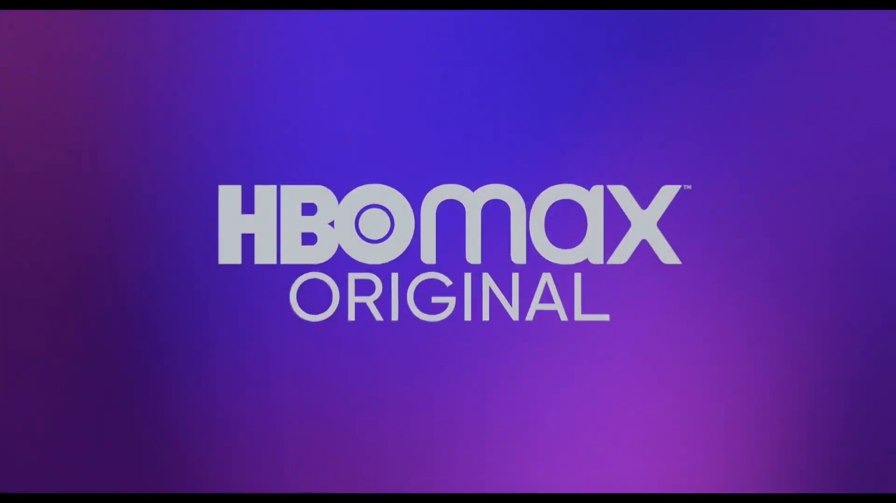
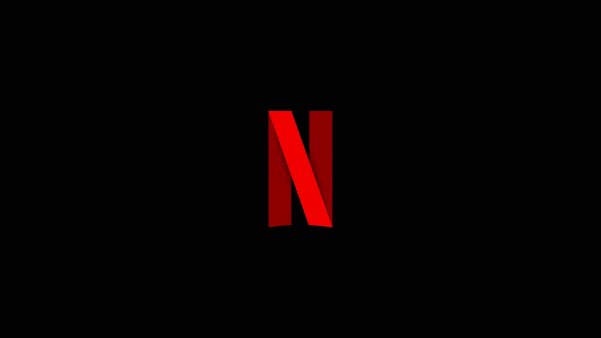
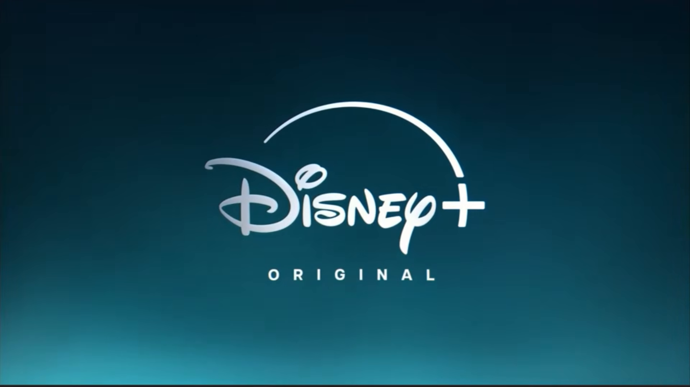
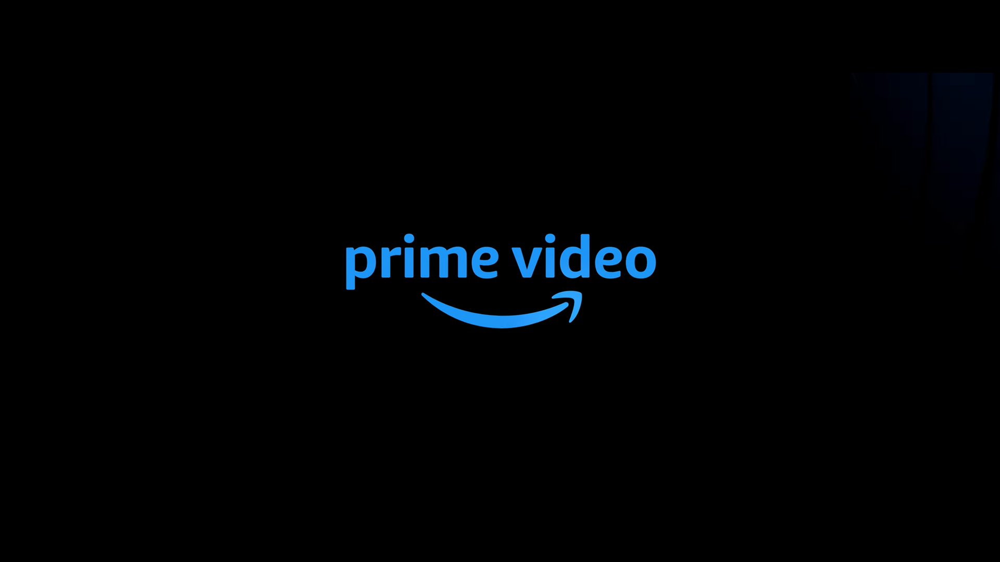
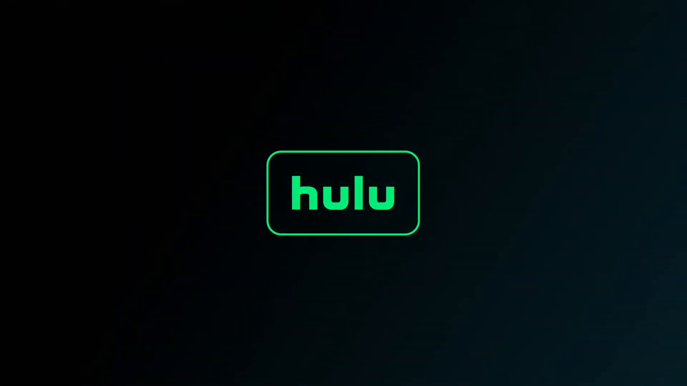

Apple TV

GIF 1280 × 720 · 4.08s · 2.24 MiB
Referência AVID · Vídeo de origemPasse o cursor ou toque na capa para ver a animação. Clique novamente para voltar à capa. GIFs sem áudio.

GIF 1280 × 720 · 4.08s · 2.24 MiB
Referência AVID · Vídeo de origem
GIF 1280 × 720 · 2.56s · 9.25 MiB
Referência AVID · Vídeo de origem
GIF 1280 × 720 · 4.16s · 6.25 MiB
Referência AVID · Vídeo de origem
GIF 1280 × 720 · 3.76s · 7.38 MiB
Referência AVID · Vídeo de origem
GIF 1280 × 720 · 4.80s · 9.82 MiB
Referência AVID · Vídeo de origem
GIF 1280 × 720 · 4.16s · 6.87 MiB
Referência AVID · Vídeo de origemGIF 1280 × 720 · 4.80s · 9.42 MiB
Referência AVID · Vídeo de origem